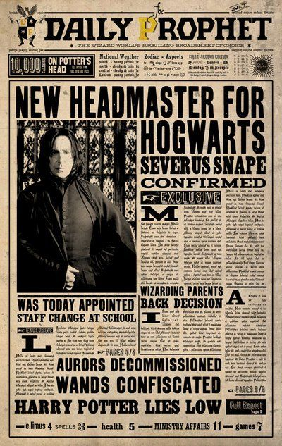
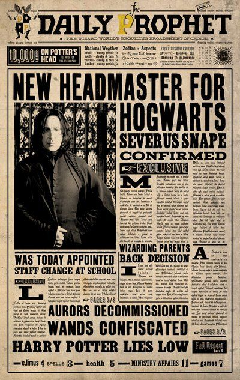

About Us Daily
 

There is only one wizarding newspaper in Britain, discounting such small circulation publications such as The Quibbler.
The Daily Prophet, whose headquarters are in Diagon Alley, is delivered by owl on a daily basis to nearly every wizarding
household in Britain. Payment is effected by placing coins in the pouch tied to the paper-owl’s leg. Occasionally
(when something particularly interesting or exciting happens, such as the illegal flight of a Ford Anglia the length
of Britain) an Evening Prophet edition will be rushed out.
The Prophet is not an entirely unbiased source of news, and sometimes displays an unfortunately sensationalist tendency
best epitomised by star reporter Rita Skeeter. Ostensibly an independent news source, it has more than once been influenced
by the Ministry (or ruling power) of the day to hush up certain stories. A clue to its overriding motivation may be
found in its name, ‘prophet’ being a homonym of ‘profit’ (although I was also taken with the idea of a wizarding newspaper
claiming foreknowledge of news to come).
Wizardkind tends not to require alternative political flavours in its news coverage (which is not to say, however,
that the Prophet does not have a political agenda). As a small, outsider and occasionally beleaguered community,
wizards are, by and large, interested in the same kinds of stories: the Quidditch League results, whether anyone
is in trouble for infractions of the International Statute of Secrecy, what irritating legislation the Misuse of Muggle
Artefacts Office has come up with now, and when the next Celestina Warbeck/Weird Sisters concert will take place.
It seems likely that wizards will continue to favour old-fashioned newsprint, even while the Muggle world resorts
increasingly to the internet. If Muggle newspapers had moving photographs, their circulation might be similarly buoyant.
Our Team
Rita Skeeter
Intrusive Daily Prophet journalist with a Quick-Quotes Quill and no scruples
Bending the truth, puncturing what she considered to be ‘inflated reputations’ with her poisonous quill, turning into a beetle to eavesdrop on conversations with her skill as an Animagus
Bozo
Photographer
A paunchy man, holding a large black camera that was smoking slightly, was watching Fleur out of the corner of his eye.
Barnabas Cuffe
Director
Always interested to hear your take on the day's news.